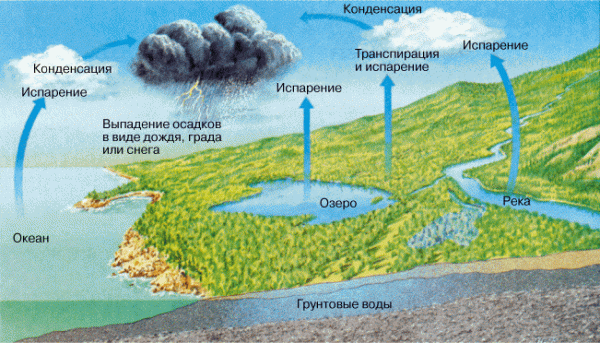
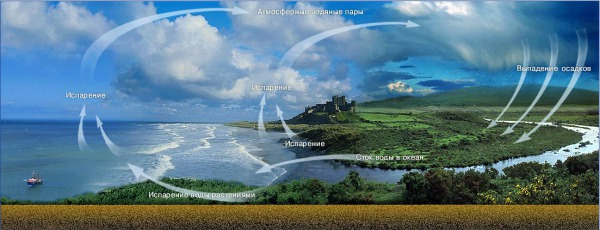
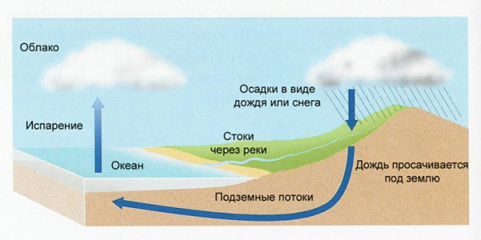

Немного о круговороте воды в природе ...

Круговорот воды — это сложный геофизический процесс, основными звеньями которого являются: испарение воды, перенос ее паров воздушными потоками, образование облаков и выпадение осадков, поверхностный и подземный сток вод в океан.В этот геологический круговорот воды встраивается биологический (или биотический) круговорот. Растения всасывают воду из почвы, а затем испаряют ее (транспирация). Часть поглощенной растениями воды идет на построение органических веществ, которые, окисляясь, снова образуют воду (биологическое окисление). Любой живой организм поглощает и выделяет воду, используя при этом энергию, полученную зелеными растениями от солнечного света (фотосинтез). Таким образом, именно излучаемая в виде света энергия Солнца «вращает колесо» круговорота воды, и не только воды, а и всех других веществ.

Количество воды, которое имеется в атмосфере, составляет примерно 0,001% мировых запасов воды, причем основная часть ее в атмосфере (95%) находится в виде пара и лишь 5% массы воды приходится на долю облачных частиц (капель воды и кристаллов льда).
Основные черты круговорота воды, или гидрологического цикла, хорошо известны. В этом цикле вода последовательно переходит из одного состояния в другое и из одной части окружающей нас среды в другую. Гидрологический цикл можно рассматривать состоящим из серии состояний, или стадий и процессов. Если круговорот воды является процессом установившимся, должно соблюдаться равенство между количеством воды, переходящим в какую-либо фазу, и количеством воды, выходящим из нее.

В общих чертах круговорот воды всегда состоит из испарения, конденсации и осадков. Но он включает три основных пункта:
1) поверхностного стока: вода становится частью поверхностных вод;
2) испарения — транспирации: вода впитывается почвой, удерживается в качестве капиллярной воды, а затем возвращается в атмосферу, испаряясь с поверхности земли, или же поглощается растениями и выделяется в виде паров при транспирации;
3) грунтовых вод: вода попадает под землю и движется сквозь нее, питая колодцы и родники и таким образом вновь попадая в систему поверхностных вод.
Согласно схеме круговорота воды, фонд воды в атмосфере невелик; скорость оборота выше, а время пребывания меньше, чем для углекислого газа.
Различают несколько видов круговоротов воды в природе:
1) Большой, или мировой, круговорот — водяной пар, образовавшейся над поверхностью океанов, переносится ветрами на материки, выпадает там в виде атмосферных осадков и возвращается в океан в виде стока. В этом процессе изменяется качество воды: При испарении соленая морская вода превращается в пресную, а загрязненная — очищается.
2) Малый, или океанический, круговорот — водяной пар, образовавшейся над поверхностью океана, сконденсируется и выпадает в виде осадков снова в океан.
3) Внутриконтинентальный круговорот — вода, которая испарилась над поверхностью суши, опять выпадают на сушу в виде атмосферных осадков.
В конце концов, осадки в процессе движения опять достигают Мирового океана.
По материалам сайта : http://distiller.kiev.ua/